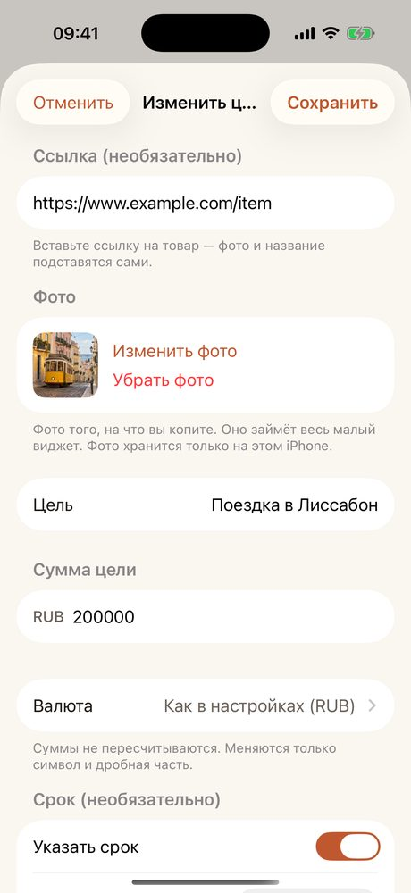
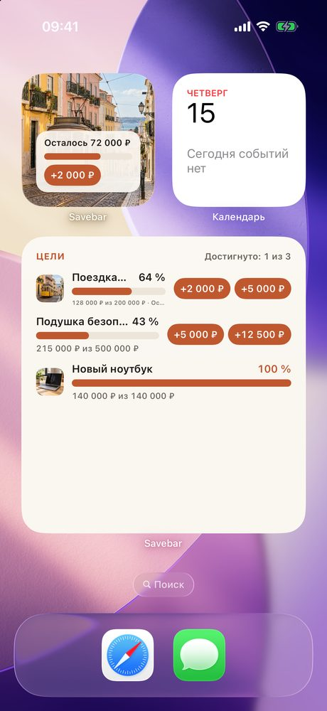

Как вывести цель накоплений на экран «Домой» iPhone
Копить на что-то проще, когда это видно. Виджет показывает шкалу — сколько уже отложено и сколько осталось — там, куда вы смотрите много раз в день, и позволяет пополнить цель одним нажатием.
Вот как настроить это в Savebar. Одна цель и маленький виджет бесплатны.
1. Создайте цель
Откройте Savebar и нажмите +.
Введите название и Сумму цели.
По желанию: включите «Указать срок» — так вы увидите, сколько дней осталось и сколько откладывать в день.
По желанию: вставьте ссылку на товар в поле «Ссылка». Фото и название подставятся со страницы.
2. Выберите сумму для кнопки виджета
Раздел «Суммы в виджете»: укажите здесь сумму, которую вы обычно откладываете. Кнопка виджета добавляет её одним нажатием, без открытия приложения.

3. Добавьте виджет на экран «Домой»
Нажмите и удерживайте пустое место на экране «Домой», пока приложения не начнут покачиваться.
Нажмите Изменить (или +) в верхнем углу, затем найдите «Savebar».
Выберите размер Маленький и нажмите Добавить виджет.
Каждый раз, когда откладываете деньги, нажимайте кнопку суммы в виджете. Шкала и процент меняются прямо там.

Виджет побольше на этой картинке, с несколькими целями, входит в Savebar Pro.
Хотите больше?
Savebar Pro — это разовая покупка, а не подписка:
Неограниченное число целей
Средний и большой виджеты с несколькими целями и до двух кнопок сумм на цель
Виджеты для экрана блокировки
Приложение для Apple Watch с теми же кнопками сумм
Вопросы
Приложение подключается к моему банку?Нет. Суммы вы вносите сами, поэтому не нужно никуда входить и ничего привязывать.
Сколько целей можно создать бесплатно?Одну, с маленьким виджетом на экране «Домой». Savebar Pro — разовая покупка — даёт неограниченное число целей, средний и большой виджеты с несколькими целями, виджеты для экрана блокировки и приложение для Apple Watch.
Можно ли добавить сумму, которой нет на кнопке?Да. Откройте цель в приложении и нажмите «+ Пополнить», чтобы ввести любую сумму.
Как выбрать, какую цель показывает виджет?Нажмите и удерживайте виджет, нажмите «Изменить виджет» и выберите цель.